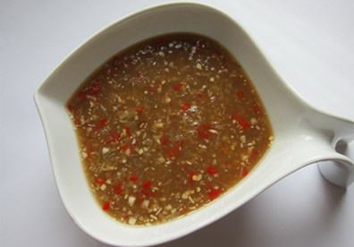

Cùng bắt tay làm thử thôi nào!
Nguyên liệu pha mắm nêm:
1/4 quả dứa
Tỏi ớt băm nhuyễn
2 thìa đường
1 thìa nước cốt chanh
Cách pha mắm nêm ngon:
Dứa bạn thái miếng nhỏ rồi cho vào máy xay sinh tố xay nhuyễn.
Tỏi ớt băm nhỏ cho thật nhuyễn.
Trộn đều tỏi, ớt, dứa xay với mắm nêm vào 1 cái bát vừa. Trộn thật đều rồi cho thêm 1-2 thìa đường cho mềm. Vì dứa tùy loại bạn mua, nếu dứa đã chín thì vị sẽ ngọt hơn nên lượng đường cho vào sẽ giảm. Vì vậy bạn nên gia giảm lượng đường cho phù hợp nhé!
Cuối cùng, cho 1 thìa nước cốt chanh vào trộn đều cho hỗn hợp bông lên là dùng được thôi.
Mắm nêm là thứ nước chấm không thể thiếu của các món cuốn miền Trung như bánh tráng cuốn thịt heo Đà Nẵng, nem lụi của Huế hay bún mắm nêm... Có thời gian rỗi, bạn hãy làm món bánh tráng cuốn thịt heo cho gia đình thưởng thức là đừng quên cách pha mắm nêm tuyệt ngon này nhé!